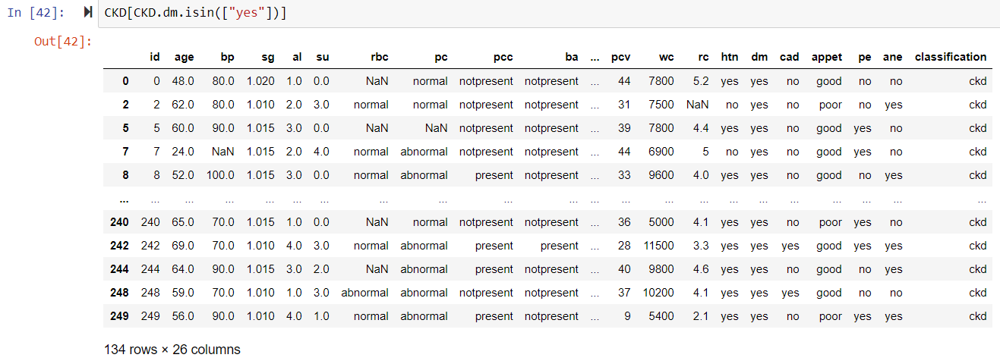

Python runs on a interpeter system ("interpreted") = code can be executed as soon as it's written. Write Python (.py) files in a text editor, then put those files in a python interpreter to be executed. To execute the .py file in the command line, just use 'python filename.py'
Organise your code into separate files, and use one main file which runs and imports items from other files. Use 'python' by itself in the command line to test Python code, use 'exit()' when you want to quit the python command line interface.
Jupyter is a really good IDE to use for Python. Use the command 'Jupyter notebook' in cmd to open it. To run a program in jupyter notebook use !python filename.py rather than just python (like in cmd)
Python comes with 'built in' functions. To print use: print()
- print - for printing
- min, max, round, abs, pow — simple numeric operations
- reversed, sorted, filter, map — for manipulating sequences and returning a new sequence
- list, tuple, str, bytes, bytearray, set, fronzenset, dict, complex, bool, int — for creating basic objects
- help — for getting the documention associated with a function e.g. help(print) (help() with no arguments enters an interactive help session)
print("Hello World!")
Python uses new lines, rather than semicolons or brackets, to "complete a command". It also uses indentation (with whitespace) to define scope (as opposed to curly brackets). In other languages, indentation is for readability only - in Python it is very important! Indent with TAB or with 4 spaces e.g.
if 5 > 2:
print("Five is greater than two!")
Variable = 'container for storing data value'. Python has no command for declaring a variable, just assign a value to the variable (with assignment operator = and it is created. Python is not strongly typed. Variables can hold values of any type. Do not declare as any particular type (like int) and can even change type after declared
x = 5
y = 'Hello Buddy'
x = True
The variable name: cannot start with a number (_ or a-zA-Z), and are case-sensitive. There are two styles of naming variables: camelCase and separating_using_underscore
You can assign values to multiple variables in one line:
x, y, z = 5, 10, 'Hello World!'
You can assign the same value to multiple variables in one line:
x = z = 5
there are three types of number-variables ("number data types") in Python:
x = 5 #this is an integer, a whole number
y = 5.7 #this is a floating-point, a number with decimals. double-precision as provided by the underlying C or Java implementation.
z = 7j #this is a complex number, have a real and imaginary part accessed through the (read-only) attributes .real and .imag.
to find out the type of variable, use the test() function:
x = 55.2832
print(test(x)) #returns class float
You can convert variables from one type to another using int(), float(), complex() and str() methods. You can also use these if you want to specify the type of variable.
x = 33.22222
print(int(x)) #returns 33
y = int(65.2342342)
print(y)
There's no char variable type! A single character variable = just a string with length = 1.
To comment a line use:
#this is a comment
print("Hello World") #this is also a comment
No real syntax for multi-line comments, but you can use a string-literal (ignored if not assigned to a variable)
"""
this is a
multi-line
comment
"""
To generate a random number, you have to import the random module, then run a method on it
import random
print(random.randrange(1,100))
Strings in python are arrays. Access the 'elements' of the string with square brackets str[0]
x = "Hello World!"
print(x[1]) #returns 'e'
To get the string contents from characters 2 to 5 for example:
x = "Hello World!"
print(x[2:5]) #returns 'llo' - LAST INDEX IS NON-INCLUSIVE, like .slice() in JS
str.strip() method removes whitepace from before and after the string
len(str) method returns the length of the string
str.lower() method returns the string in lowercase
str.upper() method returns the string in uppercase
str.replace('a','b') replaces something in the string with something else e.g.
x = "Hello World!"
print(x.replace('o','e')) #returns 'Helle Werld!'
str.split(' ') splits the string into an array by a separator, passed as the argument
x = "Hello World!"
pring(x.split(' ') #returns ["Hello", "World!"]
To insert numbers into strings, use format and the placeholder {}:
quantity = 3
itemno = 567
price = 49.95
myorder = "I want {} pieces of item {} for {} dollars."
print(myorder.format(quantity, itemno, price))
###############
quantity = 3
itemno = 567
price = 49.95
myorder = "I want to pay {2} dollars for {0} pieces of item {1}."
print(myorder.format(quantity, itemno, price))
arithmetic, assigment and comparison operators are as expected. Logical operators are different! and = &&, or = ||, not() = !()
identity operators: compare variables to see if they are the same
x is y # returns true if they are both the same
x is not y #returns true if they are not the same
membership operator: checks if a variable is in an array
fruits = ["apple", "banana"]
if "apple" in fruits: #not in does the opposite
print("Yes, apple is a fruit!")
There are four 'collection data types' or 'sequences' in Python. A sequence is the generic term for finite, ordered sets indexed by non-negative indices.
- Lists (equiv. to an array): ordered, changeable, allows duplicate elements. Mutable! Formed by placing a comma separated list of expressions in curly brackets.
myList = ['apples', 'oranges', 'bananas', 'tomatoes'] #a list
#using the list constructor instead (NB double brackets):
myList = list(('apples', 'oranges', 'bananas', 'tomatoes'))
print(myList[1]) #prints 'oranges'
for x in myList:
print(x)
#check if element is present in list
if 'apples' in myList:
print('yes')
#list length
print (len(myList))
#add elements to the end of the array (like .push())
myList.append('strawberries')
#to insert element at a specific index
myList.insert(1, 'cherries')
#to remove a specific element
myList.remove('oranges')
#to remove a specific index (if non-specified removes last element):
myList.pop(0) or
del myList[0]
#to completely empty the list
myList.clear()
#to copy a list use:
newList = myList.copy()
mytuple = ('printer', 'stapler', 'computer') #OR
mytuple = tuple(('printer', 'stapler', 'computer'))
print(mytuple[0]) #logs 'printer'
for x in mytuple: #to loop through a tuple
print(x)
if 'printer' exists in mytuple:
print('yes, there is a printer here')
print(len(mytuple)) #returns 3
del mytuple #you cannot remove or add items to a tuple, but you can delete the whole thing
mySet = {'Harry', 'Mark', 'Tom'} #or
mySet = set(('Harry', 'Mark', 'Tom'))
#you cannot get elements by their position/index, because sets are unordered/indexed
for x in mySet: #loop through the set
print(x)
print('Mark' in mySet) #returns true
mySet.add('John-John') #add a single element
mySet.update('Sam', 'Nick', 'James') #add multiple elements at once
print(len(mySet)) #length of the set
mySet.remove('Harry') #or
mySet.discard('Harry') #to remove an element
mySet.pop() #removes the last element from the set ==> unordered, you do not know what this will be.
mySet.clear() #empties the set
del mySet #deletes the set completely
myDict = {
'name': 'Lightning McQueen',
'type': 'racecar',
'age': 4,
'winner': true
}
or
dict(name="Lightning McQueen", type="racecar", age=4, winner = true)
myDict['age'] #returns 4
myDict.get('age') #returns the value of the 'age' key
myDict['age'] = 25 #changes the value of 'age' to 25
#to loop through the dictionary/object keys
for x in myDict:
print(x)
#to loop through the dictionary values
for x in myDict:
print(myDict[x])
#or
for x in myDict.values():
print(x)
#to loop through dictionary keys and values
for x, y in myDict.items():
print(x,y)
#check if key exists
if 'age' in myDict:
print('cool')
#to determine how many items (key-value pairs) the dictionary/object has
print(len(myDict))
#to remove items using a specific key
myDict.pop('age')
#or
del myDict['age']
#to remove the last inserted item
myDict.popItem()
#to empty a dictionary
myDict.clear()
#to copy a dictionary
newDict = myDict.copy() or
newDict = dict(myDict)
"""
remember, if you use newDict = myDict, newDict will simply be a reference to myDict,
and any changes to myDict will also occur in newDict
"""
######################################
IMPORTANT
dict_1 = {'Age': 22, 1: 5, 'Name': 'Bob'}
#The keys of a dictionary are accessed as an iterable using the .keys() method.
dict_1.keys()
#The values are likewise accessed using .values().
dict_1.values()
#To iterate over both in lock-step use .items().
dict_1.items()
#Do not rely on .keys() and .values() returning associated objects in the same order, use .items().
If-else statements:
a = 200
b = 33
if b > a:
print("b is greater than a")
elif a == b:
print("a and b are equal")
else:
print("a is greater than b")
If you only have one statement to execute, you can put it in one line:
if a > b: print("a is greater than b")
If only one for if and one for else:
print("A") if a > b else print("B")
print("A") if a > b else print("=") if a == b else print("B") #you can keep stringing them together.
while loop:
i = 1
while i < 6:
print(i)
i += 1
you can break a while loop (like in AHK):
i = 1
while i < 6:
print(i)
if i == 3:
break
i += 1
You can use a continue statement to stop the iteration, and then 'continue' with the next iteration ==> i.e. continue with the loop
i = 0
while i < 6:
i += 1
if i == 3:
continue
print(i)
For loops:
#to print each element in a list
myFruits = ['banana', 'apple', 'grapefruit', 'mango']
for x in myFruits:
print(x)
#to print each character in a string
for x in "Jimmy":
print(x)
You can use break if for loops:
myFruits = ['banana', 'apple', 'grapefruit', 'mango']
for x in myFruits:
print(x)
if (x == 'apple'):
break
To run a loop a specific number of times, use range()
for x in range(10): #prints 0,1,2,3,4,5,6,7,8,9
print(x)
for x in range(5,10): #starts at 5 - 5,6,7,8,9
print(x)
for x in range(5, 10, 2): #starts at 5, increments by 2s - 5, 7, 9
To specify a block of code to run when the for loop ends, use else
for x in range(6):
print(x)
else:
print("Finally finished!")
You can put loops inside of loops (nested loops)
adj = ["red", "big", "tasty"]
fruits = ["apple", "banana", "cherry"]
for x in adj:
for y in fruits:
print(x, y)
Function = "A block of organised, reusable code that runs when called to perform a single, related action". Functions always return something. If you don't specify a value they return the special value None. Defined with the def keyword in Python:
def functionName():
print("You've called the function")
functionName()
def myName(name):
print("My name is" + name)
#to set a default parameter value
def myName(name = "Jimmy"):
print("My name is" + name)
def addTwoNumbers(a,b):
return a + b
RECURSION IS A BIG THING IN PYTHON! Function recursion = 'when a function calls itself'
def recur_factorial(n):
if n == 1:
return n
else:
return n*recur_factorial(n-1)
#similar to JavaScript
Lambda function = "a small autonomous function". Syntax = lambda arguments : expression . Can have multiple arguments, but only one expression.
x = lambda a : a + 10
x(6) #returns 16
x = lambda a, b: a * b * 2
x(2,3) #returns 12
Lambdas are really useful when used inside another function. E.g. to create a function that always triples any value passed to it:
def myfunc(n):
return lambda a : a * n
mytripler = myfunc(3)
print(mytripler(11))
A class = like an object constructor function (which is why I guess they added class syntax for object constructor functions in ES6) = provides a blueprint for the layout of an object. Use the class keyword:
class Dog:
name = "Fido"
#to create an object
fido = Dog()
print(fido.name) #prints "Fido"
To give the object properties, use the inbuilt __init__() function. Called every time the class is used to create a new object.
class Person:
def __init__(self, name, age): #self refers to the current instance of the class
self.name = name
self.age = age
p1 = Person("John", 36)
print(p1.name)
print(p1.age)
Remember, objects can have methods = functions within an object.
class Person:
def __init__(self, name, age):
self.name = name
self.age = age
def myfunc(self):
print("Hello my name is " + self.name)
p1 = Person("John", 36)
p1.myfunc()
You can call self whatever you like, but it has to be the first parameter of any class.
class Person:
def __init__(mysillyobject, name, age):
mysillyobject.name = name
mysillyobject.age = age
def myfunc(abc):
print("Hello my name is " + abc.name)
p1 = Person("John", 36)
p1.myfunc()
INHERITANCE: to get a subtype/child class to inherit all the properties and methods from a supertype/parent class
class Person:
def __init__(self, fname, lname):
self.firstname = fname
self.lastname = lname
def printname(self):
print(self.firstname, self.lastname)
#Use the Person class to create an object, and then execute the printname method:
x = Person("John", "Doe")
x.printname()
#To create a child class:
class Student(Person):
pass
#Any object created with Student will have all the properties and methods in the Person class
#use pass when you don't want to add anything to the class
x = Student("Mike", "Olsen")
x.printname()
NOTE: if you add __init()__ to the child element, it will override the parent's __init()__ (same if you add any method with the same name as a method in the parent class). To keep the inheritance of the parent's __init__() function, add a call to the parent's __init__() function:
class Student(Person):
def __init__(self, fname, lname):
Person.__init__(self, fname, lname)
Boolean variables in Python are True and False, capitalised
Index of an element in a List list.index(element)
To count the number of times an element is in a list use list.count(element)
To convert all the elements in a list to integers use a list comprehension: [int(x) for x in list]
Map through a list or a tuple using map(function, iterables)
my_list = [1, 2, 3, 4, 5, 6, 7, 8, 9, 10]
my_list = list(map(lambda x: x*2, my_list))
#in Python 3.7 map() returns an object, have to apply list() to get a list back
To iterate through the elements AND the indexes of a list, use enumerate()
my_list = [1,2,4,"john","harry"]
for index, element in enumerate(my_list):
print(index, element)
Can do this with strings too, which are treated like lists in Python
RegEx:
import re #have to import the regex module to use it
example_string = "Hello World!"
#to replace all the matches in a string with something else
example_string = re.sub("[aeiou]", "", example_string)
Sorting: you can use the list.sort(key=..., reverse=...) method or Python's built in function sorted(list, key=..., reverse=...)
#sorting alphabetically
vowels = ['e', 'a', 'u', 'o', 'i']
vowels.sort()
#sorting in reverse alphabetical order
vowels = ['e', 'a', 'u', 'o', 'i']
vowels.sort(reverse=True)
You can sort by your own 'key' parameter
#sort by length
words = ['mobius', 'table', 'hippopotamus']
words.sort(key=len)
-----------------------------------------------------------------------------------------------------------------------------------
#use a custom key
def takeSecond(elem):
return elem[1]
# random list
random = [(2, 2), (3, 4), (4, 1), (1, 3)]
# sort list with key
random.sort(key=takeSecond)
To use your own callback function to sort (more difficult in Python 3)
#for Python 2.x
def greater(a, b):
if (a % b) % 2 == 0:
return 1
return -1
x = [2,7,5,10,30,15]
print(sorted(x, cmp=greater))
#for Python 3
import functools
def greater(a, b):
if (a % b) % 2 == 0:
return 1
return -1
x = [2,7,5,10,30,15]
print(sorted(x, key=functools.cmp_to_key(greater)))
Python has a large selection of libraries - either included as part of the standard installation, with more available on the Python Packaging Index (PyPI). To use functions or classes from a library, import the library with the import statement. Access library contents using the name of the library. For help using any standard library, always check the Python Documentation, or use help(). There is a huge list of standard libraries (sys,os, re (RegEx), datetime, calender, statistics...)
import math
print('pi is', math.pi)
To save typing the library name over and over again, you can give the library an 'alias' (you see this a lot)
# Use an alias for the library "pandas".
import pandas as pd
If you only want a few specific things from a library (or module), import selectively like this: NB: these names will be directly available without having to access them using the module name
from math import log, e, pi
print('e is', e)
print('log(e) is', log(e))
To import everything from a module, although modules are designed to keep names separate, and doing this can lead to name clashes:
from math import *
You can download and compile Python packages with pip (the Python package-management system) in the command line. Give pip the list of packages you want to install and it will install them. pip list shows you the packages currently installed, pip show will show you information about a specific installed package, pip search lets you search PyPI for packages
To use Pandas Series and DataFrame data types, install pandas (as a package): pip install pandas, and import it. Pandas is built on top of numpy
import pandas as pd
import numpy as np
Pandas provides two data types - Series = homogeneous or 1D
To create a series, pass a list to the Series constructor
s = pd.Series(['a','b','c','d','e','f'])
"""
0 a
1 b
2 c
3 d
4 e
"""
s = pd.Series(np.random.randn(5)) # 5 random numbers
You can supply a list of indices to be used when you initialise a new Series
s = pd.Series([1, 2, 3, 4, 5], index=['a', 'b', 'c', 'd', 'e'])
"""
a 1
b 2
c 3
d 4
e 5
"""
To specify a single value to be repeated (a scalar value), give a list of indices and the scalar will be repeated as necessary
s = pd.Series(5.0, index=range(5)) # range(5) -> (0, 1, 2, 3, 4)
print(s)
"""
0 5.0
1 5.0
2 5.0
3 5.0
4 5.0
"""
You can multiply a Series
s = pd.Series(range(5))
"""
0 0
1 1
2 2
3 3
4 4
"""
print(s*2)
"""
0 0
1 2
2 4
3 6
4 8
"""
Operations on series will line up by indices. The result will contain the union of all the indices.
a = pd.Series(5, range(-3, 3))
print(a)
"""
-3 5
-2 5
-1 5
0 5
1 5
2 5
"""
b = pd.Series(10, range(6))
print(b)
"""
0 10
1 10
2 10
3 10
4 10
5 10
"""
c = a + b
print(c)
"""
-3 NaN
-2 NaN
-1 NaN
0 15.0
1 15.0
2 15.0
3 NaN
4 NaN
5 NaN
"""
DataFrames are a 2D, size mutable tabular data structures with labeled axes (rows and columns) = a way to store data in rectangular grids that can easily be overviewed. Series contain 1D data. DataFrames contain 2D data: a dict/object-like collection of named Series DataFrames accepts many kinds of inputs
d = {'one' : pd.Series([1., 2., 3.], index=['a', 'b', 'c']), 'two' : pd.Series([10., 20., 30., 40.], index=['a', 'b', 'c', 'd'])}
print(d)
"""
{'one': a 1.0
b 2.0
c 3.0
dtype: float64, 'two': a 10.0
b 20.0
c 30.0
d 40.0
dtype: float64}
"""
#to create a table of this data:
pd.DataFrame(d, index=['d', 'b', 'a'])
one two
d NaN 40.0
b 2.0 20.0
a 1.0 10.0
pd.DataFrame(d, index=['d', 'b', 'a'], columns=['two', 'three'])
two three
d 40.0 NaN
b 20.0 NaN
a 10.0 NaN
A list of dicts (objects) is treated as row-wise data
data2 = [{'a': 1, 'b': 2}, {'a': 5, 'b': 10, 'c': 20}]
pd.DataFrame(data2)
a b c
0 1 2 NaN
1 5 10 20.0
pd.DataFrame(data2, index=['first', 'second'])
a b c
first 1 2 NaN
second 5 10 20.0
pd.DataFrame(data2, columns=['a', 'b'])
a b
0 1 2
1 5 10
initialising a DataFrame from a Series gives a DataFrame with the same index as the input Series, and with one column whose name is the original name of the Series (only if no other column name is provided).
For DataFrame operations data will align by column name and row label.
df = pd.DataFrame(np.random.randn(10, 4), columns=['A', 'B', 'C', 'D'])
print(df)
A B C D
0 -0.114411 -0.347792 0.229905 0.065136
1 0.148687 0.059598 -1.112178 0.756411
2 0.077918 0.836827 0.724616 -1.407580
3 0.444887 -0.999218 0.941205 -0.571649
4 0.956962 -2.111386 1.750528 -0.535394
5 -0.851575 -0.284910 -1.204987 -0.377005
6 1.455807 1.804247 0.501115 -0.158252
7 0.069308 0.233180 0.630596 0.588123
8 -1.579659 0.368966 -0.046377 -1.772217
9 -2.010410 1.233158 0.491535 -0.652648
df2 = pd.DataFrame(np.random.randn(7, 3), columns=['A', 'B', 'C'])
print(df2)
A B C
0 -0.359847 1.270701 -0.543924
1 0.791467 0.054907 -1.597074
2 0.410268 1.970034 0.093196
3 -0.781616 -1.265766 0.866533
4 1.132170 -0.089533 0.838081
5 -0.326185 -0.739385 1.039565
6 1.176743 1.153180 -0.845549
df + df2
A B C D
0 -0.474259 0.922909 -0.314019 NaN
1 0.940154 0.114505 -2.709252 NaN
2 0.488186 2.806861 0.817812 NaN
3 -0.336729 -2.264984 1.807737 NaN
4 2.089132 -2.200919 2.588609 NaN
5 -1.177760 -1.024295 -0.165422 NaN
6 2.632550 2.957427 -0.344434 NaN
7 NaN NaN NaN NaN
8 NaN NaN NaN NaN
9 NaN NaN NaN NaN
When doing an operation between DataFrame and Series, the default behavior is to align the Series index on the DataFrame columns, thus broadcasting row-wise.
#first row
df.iloc[0]
A -0.114411
B -0.347792
C 0.229905
D 0.065136
Name: 0, dtype: float64
df - df.iloc[0]
A B C D
0 0.000000 0.000000 0.000000 0.000000
1 4.518987 0.032927 -1.356331 1.823923
2 -0.462785 -0.925923 -1.902640 -2.037752
3 2.787914 0.169180 -0.458408 -1.141193
4 0.829392 -0.446628 -2.689951 1.315584
5 1.753669 1.045050 -1.441441 -0.395954
6 -0.101438 -0.333081 -0.496779 -0.122885
7 1.903688 2.159604 -1.273731 0.383078
8 1.634896 -0.169185 -0.561561 0.824830
9 0.715922 -0.431021 -3.640587 1.529019
Loading CSV files: to load a CSV file/dataset in pandas use CKD = pd.read_csv("data/kidney_disease/kidney_disease.csv") = "comma separated values", read/loaded as a DataFrame!!
"The Basics of Indexing": Summary of indexing and selection of DataFrames (table):
| Operation | Syntax | Result |
|---|---|---|
| Select Column | df[col] | Series |
| Select row by label | df.loc[label] | Series |
| Select row by integer location | df.iloc[loc] | Series |
| Slice rows | df[5:10] | DataFrame |
| Slice rows by boolean vector | df[bool_vec] | DataFrame |
 or for a specific row in a multiple specific columns CKD.loc[10,["bp", "al"]], returns a Series
or for a specific row in a multiple specific columns CKD.loc[10,["bp", "al"]], returns a Series
 or to slice by a single row AND column, returning a single cell value, use CKD.loc[10, "bp"] or CKD.at[10, "al"]
or to slice by a single row AND column, returning a single cell value, use CKD.loc[10, "bp"] or CKD.at[10, "al"]
 the loc indexer can do boolean selection: df.loc[df['Age'] < 30, ['Color', 'Height']]
Using iloc to access specific records and columns: use DataFrameName.iloc[row selection, column selection] e.g.
the loc indexer can do boolean selection: df.loc[df['Age'] < 30, ['Color', 'Height']]
Using iloc to access specific records and columns: use DataFrameName.iloc[row selection, column selection] e.g.
print(hospital_admission.iloc[0:20,0:5])
# Selecting the first 20 rows and columns 0 to 5 from 'hospital_admission' data
THIS IS REALLY COOL: you can "subset" (i.e. only return matching variables) with a comparison operator/booleans: e.g. CKD[CKD.bp > 76.47]

To filter, use .isin() = CKD[CKD.dm.isin(["yes"])] 
DataFrames has (built-in) methods, e.g. calling .info() on the DataFrame gives you summary information of the DataFrame: useful! CKD.info()
CKD.head(5) shows you the first 5 rows, CKD.tail(5) shows you the last 5 rows
CKD.index to just see the index
CKD.columns, CKD.values
.describe() gives you a "statistical summary" (min, max, standard deviation, mean, quartiles) of the data: CKD.describe()
.sample(n) takes a random sample of n size from the dataset e.g. CKD.sample(5)
To sort by row labels, use CKD.sort_index(axis=0). To sort by column labels, use CKD.sort_index(axis=1)
To 'drop' or remove specific columns from the DataFrame dataset/table, use DataFrameName.drop([column names], axis=1)
Plotting: using the plotnine library. Install plotnine (pip install plotnine statsmodels==0.8.0) It's a really good idea to visualise your outcome variable (in a classification ML problem) e.g. with a histogram using matplotlib In total we need to import:
from pandas import *
from plotnine import *
import pandas as pd
In order to graph one of the named series of the DataFrame (in this example all the different values of a particular attribute in the sample) against another named series, use:
p = ggplot(CKD, aes(x='id', y='bp')) + geom_point()
geom_point() renders the graph as a scatter point. Most useful for displaying the relationship between two continuous variables
To add a local regression (loess) smooth layer you must install pip install scikit-misc
p = (ggplot(CKD, aes(x='id', y='bp'))
+ geom_point(aes(color='classification'))
+ geom_smooth(method='loess', color='blue'))
p
To split the data by Diet into separate scatter plots:
p = (ggplot(CKD, aes(x='id', y='bp')) + geom_point(aes(color='classification')) + facet_wrap("~classification"))
p
To create a histogram of the data:
# geom_histogram
p = ggplot(aes(x='race', fill='race'), data=hospital)
p + geom_histogram(binwidth=1) + ggtitle("Race Histogram")
 geom_bar() gives the same result and is more versatile. The command 'fill' fills each bar with a different colour.
geom_bar() gives the same result and is more versatile. The command 'fill' fills each bar with a different colour.
p = ggplot(aes(x='race'), data=hospital)
p + geom_bar() + ggtitle("Race Histogram")

p = ggplot(aes(x='race', fill = 'race'), data=hospital)
p + geom_bar() + ggtitle("Race Histogram")
 We can alter the aesthetic mappings of geom_bar() to produce a histogram showing percentages rather than raw counts.
We can alter the aesthetic mappings of geom_bar() to produce a histogram showing percentages rather than raw counts.
p = ggplot(aes(x='race', fill='race'), data=hospital)
p + geom_bar(aes(y = ('100*..count../sum(..count..)')))+ ggtitle("Race Histogram")+ylab("Percentage")
 width is an optional argument for the spacing between each bar: default value is 0.9
width is an optional argument for the spacing between each bar: default value is 0.9
p = ggplot(aes(x='age',fill='age'), data=hospital)
p + geom_bar(width = 0.5) + ggtitle("Age Histogram")
 To check for 'null' or missing values per column/variable: replace the missing value ("?") with NaN, check if every value is null with isnull() which returns 1 if true and 0 if false, and then sum the 1s.
To check for 'null' or missing values per column/variable: replace the missing value ("?") with NaN, check if every value is null with isnull() which returns 1 if true and 0 if false, and then sum the 1s.
hosp_temp = hospital.replace('?', np.nan)
null_values = hosp_temp[['weight']].isnull().sum(axis=0)
print('Empty rows =',null_values)
You can create a bar graph with just pandas.DataFrame.plot() - already included in the pandas library!
# Plot proportions for each class of 'readmission', by using the command: DataFrame.column.value_counts().plot()
#DataFrame here is hospital_admission
color = ['steelblue', 'coral']
ax = (hospital_admission.readmission.value_counts()/len(hospital_admission)*100).plot(kind="bar",color=color, rot=0)
ax.set_yticks(np.arange(0, 120,20))
ax.set_title('Readmission (No/Yes)')

Some examples with a new dataset:
import numpy as np
import pandas as pd
from plotnine import *
hospital = pd.read_csv('data/diabetes/HOSP_class.csv', sep=',')
#to get the shared index (i.e. the rows of the DataFrame)
hospital.index
#to get the number of rows:
len(hospital.index)
#to get the labels for each Series in the DataFrame (i.e. the colums)
hospital.columns
#to get the number of columns
len(hospital.columns)
#to get the number of rows and columns together:
hospital.shape
DataFrames.describe() generates descriptive statistics that summarises the content of the dataset.
- DataFrames.describe()= just continuous (or numeric) variables
- DataFrames.describe(include='all') = all variables, continuous and categorical variables
my_tab = pd.crosstab(hospital['sex'], # Make a crosstab
columns="count") # Name the count column --> there's only one column here
my_tab
 To show percentages in the frequency table:
To show percentages in the frequency table:
my_tab2 = pd.crosstab(hospital['sex'], # Make a crosstab
columns="count").apply(lambda r: 100*r/r.sum(), axis=0) # Name the count column
my_tab2
 to check for the number of unique values:
to check for the number of unique values:
len(hospital.patient_id.unique())
Many machine learning algorithms require featuers to be uncorrelated. You should use a correlation matrix to analyse this property for our dataset. To do this, use the seaborn library and seaborn.heatmap(DataFrameName) To use the correlation matrix to analyse this property for our data set. Note that we drop the id variables because even though they are stored as numeric, they are in fact categorical.
import seaborn as sns
import matplotlib.pyplot as plt
%matplotlib inline
width=15
height=8
#"options: coolwarm, cubehelix"
cmap_option='coolwarm'
plt.figure(figsize=(width,height))
print(sns.heatmap(hospital.drop(['admission_type_id', 'discharge_disposition_id', 'admission_source_id'], axis = 1).corr()
,annot=True
,linewidth=0.5
#,cmap='
))

#another example: with hospital_admission as the DataFrame
import seaborn as sns
import pylab as pl
import matplotlib.pyplot as plt
# We plot our variables
f, ax = plt.subplots(figsize=(12, 9)) # Setting size of the results panel
sns.heatmap(hospital_admission.corr() ,linewidths=.1, annot=True, annot_kws={"size": 15}, cmap='viridis', ax=ax)
 Dark cells indicate a correlation close to 0! (THIS IS GOOD NEWS). red/light blue square in the top left of the matrix, corresponding to the features 'length of stay', 'number of lab procedures', 'number of procedures', and 'number of medications' = indicates that there is some correlation between these variables (makes sense as we would expect length of stay to increase with an increasing number of procedures and medications). The diagonal line is simply each features correlation with itself, which is of course 1 (indicating perfect correlation).
To create a dummy variable (a one hot-encoded variable) - One hot encoding is a process by which categorical variables are converted into a form that could be provided to ML algorithms to do a better job in prediction.
Dark cells indicate a correlation close to 0! (THIS IS GOOD NEWS). red/light blue square in the top left of the matrix, corresponding to the features 'length of stay', 'number of lab procedures', 'number of procedures', and 'number of medications' = indicates that there is some correlation between these variables (makes sense as we would expect length of stay to increase with an increasing number of procedures and medications). The diagonal line is simply each features correlation with itself, which is of course 1 (indicating perfect correlation).
To create a dummy variable (a one hot-encoded variable) - One hot encoding is a process by which categorical variables are converted into a form that could be provided to ML algorithms to do a better job in prediction.
pd.get_dummies(hospital)